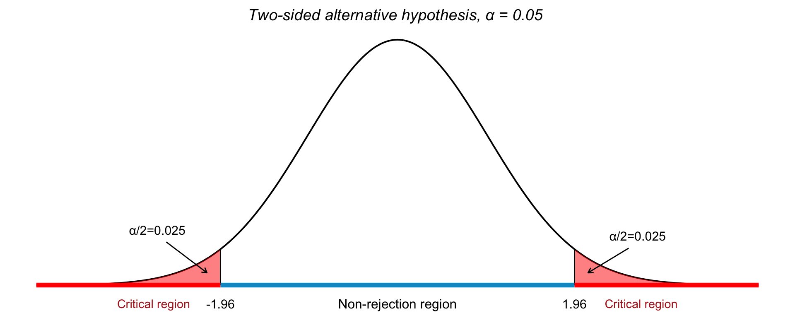
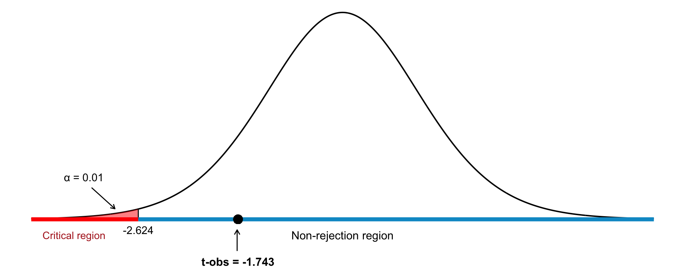

22 Hypothesis Testing
In the previous chapter, we used confidence intervals to estimate an unknown population parameter such as the mean (\(\mu\)) or proportion (\(p\)), based on a random sample. Confidence intervals provide a range of plausible values for that parameter.
While confidence intervals focus on estimation, hypothesis testing addresses decision-making: it allows us to test specific claims about a population parameter using sample data. In fact, these two methods are closely related; we can often reach the same conclusions using either approach. We return to this in more detail later in this chapter.
22.1 What Is Hypothesis Testing?
Hypothesis testing is a formal method used to evaluate two competing statements (called hypotheses) about a population parameter:
- Null hypothesis (\(H_0\)): The default or status quo assumption.
- Alternative hypothesis (\(H_1\) or \(H_a\)): A competing claim that we seek evidence for.
We use data from a sample to decide whether there is sufficient evidence to reject the null hypothesis in favor of the alternative. The null hypothesis (\(H_0\)) is assumed to be true unless the evidence from the sample strongly contradicts it. It plays the role of a “presumption of innocence.” The alternative hypothesis (\(H_1\)) is what we hope to support, but only if we have enough evidence to doubt \(H_0\).
We never prove the alternative hypothesis directly; we can only reject \(H_0\) if the evidence is strong enough, just like a jury does not prove guilt, but rather rejects the assumption of innocence when the evidence demands it. Rejecting \(H_0\) only indicates that the data are inconsistent with \(H_0\) under the assumed conditions.
Example 22.1: Bottled Water Production
A company bottles 500 ml of spring water per bottle. To ensure customer trust, they need to verify that the filling process remains accurate. Let
\[ \mu = \text{true average amount of water per bottle} \]
We want to test whether the bottling machine is still calibrated correctly:
\(H_0\): \(\mu = 500\) (machine is accurate)
\(H_1\): \(\mu \neq 500\) (machine is underfilling or overfilling)
That is, the alternative hypothesis says: “The machine does not have the correct precision.”
Example 22.2: Political Party Support
In a political opinion poll, 14% of the selected individuals say they support Party A. We know that in the most recent election, Party A received 12% of the votes. Has the proportion of A-supporters in the population increased since the election?
\(H_0\): \(P = 0.12\) (The proportion is unchanged)
\(H_1\): \(P > 0.12\) (The proportion has increased)
Should we reject \(H_0\) or not?
- If we consider the high sample value to be explainable by chance (assuming \(H_0\) is true), we stick with \(H_0\).
- If we consider the sample proportion to be too high to be reasonably explained by chance, we reject \(H_0\).
We can never be 100% certain that we are making the correct decision. Statistical hypothesis testing involves using specific decision rules to determine when we should reject \(H_0\) (and when we should retain \(H_0\)). These decision rules are designed so that we have a certain level of control over the risk of making an incorrect decision.
To understand the reasoning behind hypothesis testing, it can be helpful to draw an analogy from the legal system. Imagine a courtroom trial where the task is to determine whether the defendant is guilty or not. A key question in this context is: on whom does the burden of proof lie?
Just as in most legal systems, where a person is presumed innocent until proven guilty, hypothesis testing begins with a similar assumption. The null hypothesis, denoted \(H_0\), plays the role of “innocence”: it is the claim we initially assume to be true. The alternative hypothesis, denoted \(H_1\), corresponds to the prosecution’s claim: it challenges the status quo and must be supported by strong evidence.
There is an asymmetry in how we treat the null hypothesis (\(H_0\)) and the alternative hypothesis (\(H_1\)) in statistical hypothesis testing. We typically choose \(H_0\) to be the hypothesis that we hold on to as long as possible. It is the default assumption, often representing “no change,” “no effect,” or “no difference.” On the other hand, \(H_1\) is usually the more bold and interesting hypothesis from an applied perspective.
We require particularly strong evidence from the observed data to reject \(H_0\). The burden of proof lies with the party advocating for \(H_1\). Before diving into how to best use information from the sample, we ask ourselves: how confident must we be that the accused is guilty before reaching a guilty verdict? Similarly, how confident must we be that the null hypothesis is incorrect before deciding to believe in the alternative hypothesis?
If we reach that level of confidence, we say that we reject the null hypothesis (or accept the alternative hypothesis). The degree of confidence required depends on the context, but typically, we want to be quite certain that the assumption in the null hypothesis is incorrect. This is because the decision to reject the null hypothesis, and instead believe in the alternative, often comes with serious consequences.
22.2 Classical Hypothesis Testing
The classical approach to hypothesis testing involves the following six main steps:
Step 1. Hypotheses
Begin by formulating the null hypothesis (\(H_0\)) and the alternative hypothesis (\(H_1\)).
Examples of hypotheses about population means:
\(H_0: \mu = \mu_0\); \(H_1: \mu \ne \mu_0\)
(Simple null hypothesis; two-sided alternative)\(H_0: \mu \le \mu_0\); \(H_1: \mu > \mu_0\)
(Composite null hypothesis; one-sided alternative)
Examples of hypotheses about population proportions:
\(H_0: p = p_0\); \(H_1: p \ne p_0\)
(Simple null hypothesis; two-sided alternative)\(H_0: p = p_0\); \(H_1: p > p_0\)
(Simple null hypothesis; one-sided alternative)
Step 2. Significance Level
Choose a significance level \(\alpha\), which represents the probability (or risk) of rejecting the null hypothesis \(H_0\) when it is actually true.
A common choice is \(\alpha = 0.05\), which implies that the hypothesis test is conducted at the 5% level. This means that there is a 5% chance of making a Type I error, that is rejecting a true null hypothesis. In other words, if the null hypothesis is true, then on average, 1 in every 20 tests will incorrectly reject it. If we want to be more cautious about rejecting a correct null hypothesis, we use a smaller \(\alpha\), such as \(\alpha = 0.01\).
Step 3. Test Statistic
Specify which test statistic will be used. A test statistic is a quantity calculated from the sample data and its value forms the basis of our decision (see step 5).
The choice of test statistic depends on:
- Whether the sample is large or not.
- Whether the population is normally distributed or not.
- Whether the population variance is known or not.
We’ll return to these different cases in more detail below.
Step 4: Decision Rule
Specify the rejection region (the critical region), such that \(H_0\) is rejected if the test statistic falls within this region. In summary, the form of the critical region is determined by:
-
The form of the alternative hypothesis:
- \(H_1: \mu \neq \mu_0\) → two-tailed test → rejection region in both tails.
- \(H_1: \mu > \mu_0\) → one-tailed test → rejection region in the right tail.
- \(H_1: \mu < \mu_0\) → one-tailed test → rejection region in the left tail.
The significance level \(\alpha\).
Alternative hypotheses of the forms \(>\) and \(<\) are called one-sided, while those using \(\neq\) are called two-sided. Figure 22.1 illustrates the decision framework of hypothesis testing three panels:
Left: Depicts a two-tailed test, where both tails of the distribution represent critical regions. The dashed lines mark the critical values at \(z = \pm z_{\alpha/2}\). Each tail has an area of \(\alpha/2\), and the null hypothesis is rejected if the test statistic lies in either shaded tail. The central blue segment indicates the non-rejection region.
Right: Represents a one-sided test with the alternative hypothesis \(H_1: \mu > \mu_0\). The right tail is shaded red, indicating the critical region with area \(\alpha\). The test statistic must fall in this region to reject \(H_0\).
Middle: Shows the critical region in the left tail of the distribution, representing a one-sided test with the alternative hypothesis \(H_1: \mu < \mu_0\). The red-shaded area corresponds to the significance level \(\alpha\), and any test statistic falling in this region leads to rejection of the null hypothesis \(H_0\).
Errors and Decision Framework
When making a decision, one either makes a correct choice or one of two types of errors. Just as there is a risk that an innocent person may be wrongly convicted, there is also a risk that a guilty person may go free.
Using probability theory, we can to some extent determine the risk of making incorrect decisions.
A Type I error occurs when we incorrectly reject the null hypothesis (\(H_0\)) even though it is true. The risk of making a Type I error is called the significance level of the test and is denoted by the Greek letter \(\alpha\).
A Type II error occurs when we incorrectly fail to reject the null hypothesis, even though it is false. The risk of this error is denoted by the Greek letter \(\beta\).
A diagram describing the possible outcomes of hypothesis testing is shown below:
| Reality | \(H_0\) is true | \(H_0\) is false |
|---|---|---|
| Decision | ||
| Do not reject \(H_0\) | Correct decision | Type II error (incorrect decision) |
| Reject \(H_0\) | Type I error (incorrect decision) | Correct decision |
In classical hypothesis testing, we primarily control the probability of making a Type I error. This is done by setting the significance level \(\alpha\) to a predefined low value (commonly \(\alpha = 0.01\), \(0.05\), or \(0.10\)).
\[ \alpha = \text{Significance level of the test} = P(\text{Reject } H_0 \mid H_0 \text{ is true}) \]
After setting the acceptable level for Type I errors, we then aim to reduce the probability of Type II errors (\(\beta\)) by choosing a sufficiently large sample size.
Once the hypotheses have been formulated, the appropriate test statistic selected and decision rules specified, we proceed with the final steps of the classical hypothesis testing procedure:
Step 5: Observation
We calculate the value of the test statistic using the data obtained from the sample. This computation allows us to compare the observed value with the theoretical distribution under the null hypothesis. This value is what we refere to as our observed value.
Step 6: Conclusion
Based on the value of the test statistic (our observed value), we make our decision based on the decision rule:
If the value falls outside the critical boundaries (i.e. outside the non-rejection region), we reject the null hypothesis \(H_0\). This means that we have obtained a result that is statistically significant at the chosen significance level \(\alpha\).
If the value falls within the non-rejection region, we do not reject \(H_0\). In this case, the result is said to be not statistically significant.
In essence, these final steps guide us in deciding whether the sample data provides enough evidence to conclude that the null hypothesis is unlikely to be true, given the selected confidence level.
Note
A non-significant result does not mean that we can conclude the null hypothesis (\(H_0\)) is true. It simply indicates that the alternative hypothesis (\(H_1\)) does not present strong enough evidence against \(H_0\) in this particular case.
There may be many other potential null hypotheses that would also not be rejected. Therefore, failing to reject \(H_0\) is not the same as accepting \(H_0\) as true.
In other words, we use the terms ‘reject’ and ‘fail to reject’ to summarize the possible outcomes of a hypothesis test
22.3 Hypothesis Testing for a Population Mean
Just as with confidence intervals, different cases must be considered when conducting hypothesis tests:
- Is the sample size large or small?
- Is the population normally distributed?
- Is the population variance known?
22.3.1 Two-Sided Hypothesis Tests
We begin with an example: suppose we draw a sample of size \(n\) from a normally distributed population where the mean \(\mu\) is unknown but the variance \(\sigma^2\) is known. We conduct a two-sided hypothesis test at a significance level \(\alpha = 0.05\), walking through the six steps of hypothesis testing.
1. Hypotheses
We want to test whether the population mean equals some hypothesized value \(\mu_0\). The hypotheses are:
\[ H_0: \mu = \mu_0 \] \[ H_1: \mu \ne \mu_0 \]
This is a two-sided test, as we are considering deviations in both directions from \(\mu_0\).
2. Significance Level
We choose a significance level of:
\[ \alpha = 0.05 \]
This indicates we are willing to accept a 5% chance of rejecting the null hypothesis if it is actually true.
3. Test Statistic
Since the population is normally distributed and the population standard deviation \(\sigma\) is known, we use the standard normal \(Z\) statistic:
\[ Z = \frac{\bar{x} - \mu_0}{\sigma / \sqrt{n}} \]
Under \(H_0\), the statistic follows the standard normal distribution:
\[ Z \sim N(0, 1) \]
4. Decision Rule
For a two-sided test with \(\alpha = 0.05\), the critical values are:
\[ z_{\alpha/2} = \pm 1.96 \]
The decision rule is:
- Reject \(H_0\) if \(|z_{\text{obs}}| > 1.96\)
- Otherwise, do not reject \(H_0\)
The critical regions for this test is visualized in Figure 22.2, where we see the threshold for rejecting \(H_0\) in both directions when testing for a deviation from a hypothesized population mean.

5. Observation
Compute the observed value of the test statistic:
\[ z_{\text{obs}} = \frac{\bar{x} - \mu_0}{\sigma / \sqrt{n}} \]
6. Conclusion
Compare \(z_{\text{obs}}\) to the critical values:
- If \(|z_{\text{obs}}| > 1.96\), reject \(H_0\)
- Otherwise, fail to reject \(H_0\)
This tells us whether the sample provides strong enough evidence to conclude that the population mean differs from \(\mu_0\).
Note: Choosing Critical Values for a Hypothesis Test
A reasonable starting point in hypothesis testing is that we should reject the null hypothesis (\(H_0\)) if we observe a sample mean \(\bar{x}\) that is “far” from the expected value \(\mu_0\) under \(H_0\).
In practical terms, \(\bar{x}\) being far from \(\mu_0\) means that the test statistic \(Z\) takes on a value far from 0; either in the positive or negative direction. Therefore, we decide to reject \(H_0\) if \(Z\) falls outside a specified range: specifically, outside the interval \([-c, c]\), where \(c\) is a positive constant that we determine based on the desired significance level \(\alpha\).
To define this cutoff \(c\), we choose it so that the total probability of \(Z\) falling outside the interval (i.e., the two tails) equals the chosen significance level \(\alpha\). For example, with \(\alpha = 0.05\), we solve:
\[ P(|Z| > c \mid H_0 \text{ true}) = 0.05 \]
Since the distribution of \(Z\) under the null hypothesis is standard normal \(N(0, 1)\), we find:
\[ P(|Z| > 1.96 \mid H_0 \text{ true}) = 0.05 \]
Thus, we set \(c = 1.96\) for a two-sided test at the 5% significance level. Our final decision rule becomes:
Reject \(H_0\) if the computed test statistic \(Z\) falls outside the interval \([-1.96,\ 1.96]\). Otherwise, we fail to reject \(H_0\).
22.3.2 One-Sided Hypothesis Tests
In some situations, we are not interested in detecting any difference from the null value, but specifically a greater or smaller value. In such cases, we use a one-sided alternative hypothesis. The structure of the test depends on the direction specified in the alternative.
Testing if the mean is greater than a specified value
We want to test the hypotheses:
\[ H_0: \mu = \mu_0 \quad \text{vs.} \quad H_1: \mu > \mu_0 \]
In this case, we are interested in large values of the sample mean \(\bar{x}\) as evidence against \(H_0\). The rejection region lies in the right tail of the standard normal distribution.
For a significance level \(\alpha = 0.05\), the critical value is:
\[ z_\alpha = 1.645 \]
We reject the null hypothesis if:
\[ z_{\text{obs}} > 1.645 \]
This corresponds to the idea that an unusually high observed value of \(\bar{x}\) supports the alternative that the true mean is greater than \(\mu_0\).
Testing if the mean is less than a specified value
Now suppose we want to test:
\[ H_0: \mu = \mu_0 \quad \text{vs.} \quad H_1: \mu < \mu_0 \]
Here, we are interested in small values of the sample mean as evidence against \(H_0\). The rejection region lies in the left tail of the standard normal distribution.
For \(\alpha = 0.05\), the critical value becomes:
\[ z_\alpha = -1.645 \]
We reject the null hypothesis if:
\[ z_{\text{obs}} < -1.645 \]
This reflects the logic that low values of \(\bar{x}\) support the alternative that the true mean is less than \(\mu_0\).
The critical regions for these one-sided tests are visualized in Figure 22.3, where we see the threshold for rejecting \(H_0\) in either directions when testing for a deviation from a hypothesized population mean.

22.3.3 Hypothesis Testing with Unknown Variance
Up until now, we have assumed that the population is normally distributed and that the population variance \(\sigma^2\) is known. But what if the population variance is unknown or if the sample size is small?
In such cases, we no longer use the standard normal distribution (\(Z\)). Instead, we use the Student’s \(t\)-distribution, which accounts for the additional uncertainty introduced by estimating the population standard deviation from the sample.
The test statistic is then defined as:
\[ t = \frac{\bar{X} - \mu_0}{s / \sqrt{n}} \]
where:
- \(\bar{X}\) is the sample mean,
- \(\mu_0\) is the value of the population mean under the null hypothesis,
- \(s\) is the sample standard deviation,
- \(n\) is the sample size.
Under the null hypothesis \(H_0\), this test statistic follows a \(t\)-distribution with \(n - 1\) degrees of freedom.
This approach is particularly crucial when the sample size is small (\(n < 30\)), and the population variance cannot be assumed to be known. The \(t\)-distribution is wider than the normal distribution, which reflects greater uncertainty in small samples. As \(n\) increases, the \(t\)-distribution approaches the standard normal distribution (see Chapter 21).
Summary: Hypothesis Tests for a Population Mean
When testing hypotheses about a population mean, the choice of test statistic depends on the sample size, whether the population standard deviation is known, and the shape of the population distribution. These different cases for a test of the population mean are shown in Table 22.1.
| Conditions | Test Statistic | Distribution |
|---|---|---|
| \(n \geq 30\), \(\sigma^2\) known | \(Z = \dfrac{\bar{X} - \mu_0}{\sigma / \sqrt{n}}\) | Standard Normal (\(Z\)) |
| \(n \geq 30\), \(\sigma^2\) unknown | \(Z = \dfrac{\bar{X} - \mu_0}{s / \sqrt{n}}\) | Standard Normal (\(Z\)) |
| \(n < 30\), \(\sigma^2\) known, normal population | \(Z = \dfrac{\bar{X} - \mu_0}{\sigma / \sqrt{n}}\) | Standard Normal (\(Z\)) |
| \(n < 30\), \(\sigma^2\) unknown, normal population | \(t = \dfrac{\bar{X} - \mu_0}{s / \sqrt{n}}\) | \(t\) with \(n-1\) df |
Example 22.1: Hypothesis Testing for a Mean
We are given a sample of \(n = 16\) observations from a normally distributed population with a known standard deviation \(\sigma = 16\). The sample mean is \(\bar{x} = 743\). We want to test at the 5% significance level whether the population mean differs from 750, i.e., whether \(\mu \ne 750\).
Step 1: Hypotheses \[ H_0: \mu = 750 \] \[ H_1: \mu \ne 750 \] This is a two-sided test.
Step 2: Significance Level
We use a significance level of: \[ \alpha = 0.05 \]Step 3: Test Statistic
Since \(\sigma\) is known and the population is normally distributed, we use the standard normal test statistic (see Table 22.1): \[ Z = \frac{\bar{x} - \mu_0}{\sigma / \sqrt{n}} \sim N(0,1) \]Step 4: Decision Rule
Because this is a two-tailed test, the critical values are: \[ z_{\alpha/2} = \pm 1.96 \] We reject \(H_0\) if: \[ |z| > 1.96 \]Step 5: Observation
We use the sample data to compute our observed value: \[ Z = \frac{\bar{x} - \mu_0}{\sigma / \sqrt{n}} = \frac{743 - 750}{16 / \sqrt{16}} = \frac{-7}{4} = -1.75 \]Step 6: Conclusion
Since the observed test statistic is \(z = -1.75\) and: \[ |-1.75| < 1.96 \] we fail to reject the null hypothesis. There is not enough evidence at the 5% level to conclude that the population mean differs from 750.
This test is visualized in Figure 22.4.

Example 22.2: Hypothesis Test for a Mean
We are given a random sample of size \(n = 15\) drawn from a normally distributed population with unknown standard deviation. The sample has a mean \(\bar{x} = 24.1\) and a sample standard deviation \(s = 2\). We want to test, at the 1% significance level, whether the population mean \(\mu\) is less than 25.
Step 1: Hypotheses
We are conducting a one-sided (left-tailed) test: \[ H_0: \mu = 25 \] \[ H_1: \mu < 25 \]Step 2: Significance Level
We choose a significance level of \(\alpha = 0.01\).Step 3: Test Statistic
Since \(\sigma\) is unknown and \(n\) is small, we use the \(t\)-distribution (see Table 22.1): \[ t = \frac{\bar{x} - \mu_0}{s / \sqrt{n}} \sim t(n-1) \]Step 4: Decision Rule
With \(n - 1 = 14\) degrees of freedom and \(\alpha = 0.01\) (one-tailed), we find the critical value: \[ t_{14, 0.01} = -2.624 \] We reject \(H_0\) if \(t_{\text{obs}} < -2.624\).Step 5: Observation
We use the sample data to compute our observed value: \[ t = \frac{\bar{x} - \mu_0}{s / \sqrt{n}} = \frac{24.1 - 25}{2 / \sqrt{15}} \approx -1.743 \]Step 5: Conclusion Since \(t_{\text{obs}} = -1.743\) is greater than \(-2.624\) (in the non-rejection region), we do not reject the null hypothesis. We fail to reject \(H_0\). The sample does not provide sufficient evidence at the 1% significance level to conclude that the population mean is less than 25. See Figure 22.5 for an illustration of this one-tailed test.
Note: Because the test statistic does not fall in the rejection region, the observed sample mean can be explained by random sampling variation if the true mean were 25.

22.4 Hypothesis Testing for a Population Proportion
In this section, we test hypotheses about a population proportion \(p\) based on data from a single sample. The hypotheses can be formulated as:
- \(H_0: p = p_0\) (null hypothesis)
-
\(H_1\): one of the following alternative hypotheses:
- \(p \neq p_0\) (two-tailed)
- \(p > p_0\) (right-tailed)
- \(p < p_0\) (left-tailed)
Here, \(p\) is the unknown population proportion, and \(p_0\) is a specified numerical value.
We ask: Is the observed sample proportion \(\hat{p}\) far enough from \(p_0\) to justify rejecting the null hypothesis \(H_0\)? Or is the observed deviation consistent with sampling variation?
If the sample size is sufficiently large, we use the test statistic: \[ Z = \frac{\hat{p} - p_0}{\sqrt{\frac{p_0(1 - p_0)}{n}}} \] Under the null hypothesis \(H_0\), this statistic is approximately standard normal: \[ Z \sim N(0, 1) \] For a common significance level \(\alpha = 0.05\), the decision rules are as follows:
| Alternative Hypothesis | Reject \(H_0\) if… | Critical Value (\(z_c\)) |
|---|---|---|
| \(p \neq p_0\) | \(|z_{obs}| > z_c\) | \(z_c = 1.96\) |
| \(p > p_0\) | \(z_{obs} > z_c\) | \(z_c = 1.645\) |
| \(p < p_0\) | \(z_{obs} < -z_c\) | \(z_c = -1.645\) |
The critical values change with the chosen significance level. For other \(\alpha\), adjust \(z_c\) accordingly.
Example 22.3: Hypothesis Test for a Population Proportion
In a random sample of \(n = 1200\) individuals, 625 report a particular opinion. Do the sample data support the claim that more than half of the population shares this opinion? We will test this at a significance level of \(\alpha = 0.05\).
Step 1: Hypotheses
This is a one-sided test:Null hypothesis: \(H_0: p = 0.5\)
Alternative hypothesis: \(H_1: p > 0.5\)
Step 2: Significance Level We use \(\alpha = 0.05\).
-
Step 3: Test Statistic
Because the sample size is large, we use the normal approximation. The test statistic is: \[ Z = \frac{\hat{p} - p_0}{\sqrt{ \frac{p_0(1 - p_0)}{n} }} \] where:- \(\hat{p} = \frac{625}{1200} = 0.521\)
- \(p_0 = 0.5\)
- \(n = 1200\)
Step 4: Decision Rule
For a one-sided test at the 5% level, we reject \(H_0\) if: \[ z_{\text{obs}} > 1.645 \]Step 5: Observation
Substitute the values into the formula for test statistic: \[ z_{\text{obs}} = \frac{0.521 - 0.5}{\sqrt{ \frac{0.5(1 - 0.5)}{1200} }} = \frac{0.021}{0.0144} \approx 1.45 \]Step 6: Conclusion
Since \(z_{\text{obs}} = 1.45\) is less than the critical value 1.645, we fail to reject the null hypothesis. This means that the sample does not provide sufficient evidence to support the claim that more than half of the population holds this opinion at the 5% level. The test is visualize in Figure 22.6.

22.5 Hypothesis Testing with \(p\)-Values
In hypothesis testing, once the test statistic has been calculated, the next step is to decide whether to reject the null hypothesis. This decision traditionally depends on whether the test statistic falls within the critical region defined by a chosen significance level (\(\alpha\)). However, this binary decision does not reveal how unusual or extreme the observed result actually is under the assumption that the null hypothesis is true.
To provide a more nuanced view, we use what is known as the \(p\)-value. The \(p\)-value answers the question:
If the null hypothesis were true, what is the probability of obtaining a result at least as extreme as the one observed?
In this sense, the \(p\)-value is a measure of how compatible the observed data are with the null hypothesis. A small \(p\)-value indicates that such an extreme outcome would be unlikely if the null hypothesis were true, thereby providing evidence against it.
The smaller the \(p\)-value, the stronger the evidence against the null hypothesis in favor of the alternative. This value can also be thought of as a kind of post hoc significance threshold:
The \(p\)-value is the lowest significance level at which the null hypothesis would be rejected based on the observed data.
Instead of comparing the test statistic to a critical value, statistical software typically reports the \(p\)-value directly. This allows researchers and readers to interpret the strength of the evidence themselves, depending on the context and the significance level they consider appropriate.
In practical terms, if a researcher has set a significance level of 0.05 before conducting the test, and the calculated \(p\)-value is below this threshold, the null hypothesis would be rejected. If the \(p\)-value is greater, the null hypothesis is not rejected. The \(p\)-value thus becomes a central element in statistical inference, guiding conclusions with more granularity than a simple yes-or-no decision.
Let’s consider an example: suppose we are conducting a hypothesis test at the 5% level using the alternative hypothesis: \[ H_1: \mu > \mu_0 \] and the sample results yield a \(p\)-value of 3%. We perform this test at a significance level of \(\alpha = 0.05\), i.e., a 5% threshold for rejecting the null hypothesis.
The \(p\)-value here tells us that the probability (under the assumption that the null hypothesis is true) of obtaining a result at least as extreme as the one observed is 3%. Since this is less than 5%, we reject the null hypothesis.
This decision is based on comparing the \(p\)-value to the critical value threshold. The critical region begins at the so-called critical point, the value on the distribution where the area under the curve to the right equals \(\alpha = 0.05\).
Because the \(p\)-value corresponds to an area of only 3% under the curve to the right of our observed test statistic, and 3% is less than 5%, the observed value lies beyond the critical point and thus falls in the rejection region. This interpretation means the result is statistically significant at the 5% level. This is visualized in Figure 22.7.
For this example, the \(p\)-value is given as \[P (Z>z_{obs}|H_0 \text{ true} ) = 1−\Phi(z_{obs}) =0 .03\] where \(\Phi\) is the cumulative distribution function (CDF) of the standard normal distribution. Thus, the p-value is the probability (under the null hypothesis \(H_0\)) of obtaining a value of \(Z\) at least as extreme as the observed value \(z_{obs}\).
Suppose we want to test whether a population mean is equal to a specific value. Our hypotheses are:
- Null hypothesis: \(H_0: \mu = \mu_0\)
- Alternative hypothesis: \(H_1: \mu \neq \mu_0\)
In this case, we are interested in detecting whether the mean is either significantly larger or smaller than the hypothesized value, that is a two-tailed test. To determine how surprising our result is under the assumption that \(H_0\) is true, we can calculate the \(p\)-value. This is the probability of obtaining a \(Z\) value that is at least as extreme as the observed value, in either direction.
The formula for the \(p\)-value then becomes: \[ p\text{-value} = 2 \left[1 - \Phi\left(|z_{\text{obs}}|\right)\right] \]
where \(\Phi\) is the cumulative distribution function (CDF) of the standard normal distribution, and \(|z_{\text{obs}}|\) is the absolute value of our observed test statistic. This is shown in Figure 22.8.
Example 22.4: Hypothesis Testing Using the \(p\)-value
We have a random sample of \(n = 70\) observations from a population with unknown distribution and unknown variance. From the sample, we obtain:
- Sample mean: \(\bar{x} = 14100\)
- Sample standard deviation: \(s = 1900\)
We want to test whether the population mean \(\mu\) is greater than 13500, using the \(p\)-value method.
Hypotheses \[ H_0: \mu = 13500 \\ H_1: \mu > 13500 \]
Test Statistic
Since the population variance \(\sigma^2\) is unknown but the sample is large, we use the standardized test statistic: \[ Z = \frac{\bar{X} - \mu_0}{s / \sqrt{n}} \]Observation \[ z_{\text{obs}} = \frac{14100 - 13500}{1900 / \sqrt{70}} = 2.64 \] Specifying a significance level or a formal decision rule isn’t necessary here, since the \(p\)-value alone provides sufficient information to determine whether the null hypothesis should be rejected. We therefore compute the \(p\)-value as the next step.
\(p\)-value
Under the null hypothesis, \(Z \sim N(0, 1)\). The \(p\)-value is the probability of obtaining a value as extreme or more extreme than the observed value when \(H_0\) is true (see Appendix A): \[ \text{p-value} = P(Z > 2.64) = 1 - \Phi(2.64) = 1 - 0.9959 = 0.0041 \] See Figure 22.9 for an illustration of this \(p\)-value.Conclusion As long as the significance level \(\alpha > 0.0041\), we reject the null hypothesis. Thus, we reject \(H_0\) at the 1% level of significance. In fact, we would reject it at any significance level above 0.41%, but not below. There is strong evidence in favor of \(H_1\); that the population mean is greater than 13500.

Example 22.5: Two-Sided Hypothesis Test with \(p\)-value
We use the same setup as in Example 22.4, but this time we test against the two-sided alternative: \[ H_1: \mu \neq 13,\!500 \] This means that both very high and very low values of the test statistic \(Z\) are considered evidence against the null hypothesis \(H_0\). We observe: \[ z_{\text{obs}} = 2.64 \] The \(p\)-value is now calculated as:
\[ \begin{split} p\text{-value} & = P(Z > z_{\text{obs}} \mid H_0) + P(Z < -z_{\text{obs}} \mid H_0) \\ & = 2 \cdot [1 - \Phi(2.64)] = 2 \cdot (1 - 0.9959) = 0.0082 \end{split} \] We multiply by 2 because in a two-sided test, extreme outcomes in both directions (greater than or less than the hypothesized value) are considered equally inconsistent with the null hypothesis. Therefore, we calculate the probability of observing a test statistic at least as extreme as \(|z_{\text{obs}}|\) in either tail of the distribution, as shown in Figure 22.10.
Since the \(p\)-value is 0.0082, we would reject the null hypothesis at a 1% significance level. In fact, we would reject it at any significance level down to 0.82%, but not below that. This provides strong evidence in favor of the alternative hypothesis \(H_1\) over the null hypothesis \(H_0\).
22.6 Hypothesis Testing and Confidence Intervals
When we are testing a hypothesis such as \[ H_0 : \mu = \mu_0 \] against the two-sided alternative hypothesis \[ H_1 : \mu \ne \mu_0, \] we can use a confidence interval for the population mean \(\mu\) instead of computing a test statistic directly. The key relationship is:
The null hypothesis \(H_0\) is rejected at significance level \(\alpha\) if and only if the \(100(1 - \alpha)\%\) confidence interval for \(\mu\) does not include the value \(\mu_0\).
Instead of calculating the value of a test statistic, we can construct a 95% confidence interval for \(\mu\) and check whether the value \(\mu_0\) lies within this interval or not (Significance level = 5%).
Suppose we are given a 95% confidence interval for the population mean as \(64.8 < \mu < 67.3\). We want to test the null hypothesis: \[ H_0: \mu = 65 \quad \] against \[ H_1: \mu \ne 65 \] Since the hypothesized value 65 lies inside the confidence interval, we fail to reject the null hypothesis. In other words, the data do not provide sufficient evidence to suggest that the population mean differs from 65 at the 5% significance level.
To state this more generally:
- A 95% confidence interval contains all values of \(\mu\) that would not be rejected in a two-sided test at the 5% significance level.
- A 99% confidence interval contains all values of \(\mu\) that would not be rejected at the 1% level.
- A 99.9% confidence interval corresponds to a 0.1% significance level.
- and so on…
This shows how confidence intervals and hypothesis testing are closely related; they are essentially two sides of the same inferential coin.
Note: when working with proportions
While the above equivalence between hypothesis tests and confidence intervals holds well for means, it is not exact for proportions or differences in proportions. This is because confidence intervals for proportions use the sample proportion \(\hat{p}\) in the standard error: \[ \hat{p} \pm z_{\alpha/2} \cdot \sqrt{\frac{\hat{p}(1 - \hat{p})}{n}} \]
and hypothesis tests for a proportion use the null proportion \(p_0\) in the test statistic: \[ Z = \frac{\hat{p} - p_0}{\sqrt{ \frac{p_0(1 - p_0)}{n} }} \]
Thus, confidence intervals and hypothesis testing may give slightly different results in these cases, especially with small samples.
22.7 Hypothesis Testing for the Difference Between Two Population Means
In this section, we explore how to test hypotheses about the difference between the means of two populations. This is particularly useful when we want to determine if there is a statistically significant difference between the average values of two groups.
We use the same notation as in confidence interval estimation (Chapter 21) for the difference between two means:
| Population | Mean (\(\mu\)) | Standard Deviation (\(\sigma\)) |
|---|---|---|
| Population 1 | \(\mu_x\) | \(\sigma_x\) |
| Population 2 | \(\mu_y\) | \(\sigma_y\) |
We are interested in making inferences about the difference \(\mu_x - \mu_y\). Suppose we have one independent sample from each of the two populations. We summarize the data as:
| Sample | Size (\(n\)) | Sample Mean (\(\bar{x}\) or \(\bar{y}\)) | Sample Std. Dev. (\(s\)) |
|---|---|---|---|
| From Population 1 | \(n_x\) | \(\bar{x}\) | \(s_x\) |
| From Population 2 | \(n_y\) | \(\bar{y}\) | \(s_y\) |
Note: The samples must be independently drawn from the respective populations.
We want to test:
- Null hypothesis: \(H_0: \mu_x - \mu_y = D_0\)
- Alternative hypothesis (two-sided): \(H_1: \mu_x - \mu_y \ne D_0\)
Often, \(D_0 = 0\), meaning we test for equality of the population means:
- \(H_0: \mu_x = \mu_y\)
- \(H_1: \mu_x \ne \mu_y\)
One-sided tests may also be appropriate, which corresponds to \(D_0<0\) or \(D_0>0\):
- \(H_1: \mu_x < \mu_y\) (or \(D_0<0\))
- \(H_1: \mu_x > \mu_y\) (or \(D_0>0\))
We compare the observed difference in sample means \(\bar{x} - \bar{y}\) to the hypothesized value \(D_0\). The core question becomes:
Is the observed value of \(\bar{x} - \bar{y}\) far enough from \(D_0\) to reject \(H_0\)?
This decision again depends on the factors:
- Sample sizes (small vs large)
- Whether population distributions are approximately normal
- Whether population variances are known or unknown
These factors determine the appropriate test statistic (e.g., \(Z\) or \(t\)) and which distribution to use. We will now look at specific cases based on these conditions.
22.7.1 Case 1: Large Samples
We assume \(n_x \geq 30\) and \(n_y \geq 30\). With large samples, we do not need to assume anything about the population distributions.
The test statistic when population variances are known is given by: \[ Z = \frac{(\bar{x} - \bar{y}) - D_0}{\sqrt{\frac{\sigma_x^2}{n_x} + \frac{\sigma_y^2}{n_y}}} \] and when population variances are unknown, we have \[ Z = \frac{(\bar{x} - \bar{y}) - D_0}{\sqrt{\frac{s_x^2}{n_x} + \frac{s_y^2}{n_y}}} \] where:
- \(\bar{x}\) and \(\bar{y}\) are the sample means,
- \(D_0\) is the hypothesized difference (typically \(0\)),
- \(s_x^2\) and \(s_y^2\) are the sample variances,
- \(n_x\) and \(n_y\) are the sample sizes.
The test statistics \(Z\) above are approximately normally distributed, \(N(0,1)\), when \(H_0\) is true. Rejection boundaries (critical values) are determined by the significance level and the alternative hypothesis, just as done earlier.
22.7.2 Case 2: Small Samples
Here, at least one of \(n_x\) and \(n_y\) is smaller than 30. In this case, both samples must come from normally distributed populations. That is, at least one of \(n_x\) and \(n_y\) is smaller than 30. In this case, both samples must come from normally distributed populations.
a) Population Variances Known
If \(\sigma_x^2\) and \(\sigma_y^2\) are known, the test statistic is given by: \[ Z = \frac{(\bar{x} - \bar{y}) - D_0}{\sqrt{\frac{\sigma_x^2}{n_x} + \frac{\sigma_y^2}{n_y}}} \]
b) Population Variances Unknown but Assumed Equal
We must assume that the population variances are equal, although their actual values are unknown. Then the test statistic is given by: \[ t = \frac{(\bar{x} - \bar{y}) - D_0}{\sqrt{s_p^2 \left( \frac{1}{n_x} + \frac{1}{n_y} \right)}} \] where the pooled sample variance \(s_p^2\) is: \[ s_p^2 = \frac{(n_x - 1)s_x^2 + (n_y - 1)s_y^2}{n_x + n_y - 2} \] This \(t\) statistic follows a \(t\)-distribution with: \[ \nu = n_x + n_y - 2 \] degrees of freedom when \(H_0\) is true.
c) Population Variances Unknown and Not Assumed Equal (Welch’s t-test)
If we cannot assume equal variances, we use Welch’s t-test with statistic: \[ t = \frac{(\bar{x} - \bar{y}) - D_0}{\sqrt{\frac{s_x^2}{n_x} + \frac{s_y^2}{n_y}}} \] This test statistic approximately follows a \(t\)-distribution with degrees of freedom calculated by Welch-Satterthwaite approximation: \[ \nu = \frac{\left( \frac{s_x^2}{n_x} + \frac{s_y^2}{n_y} \right)^2}{ \frac{\left( s_x^2/n_x \right)^2}{n_x - 1} + \frac{\left( s_y^2/n_y \right)^2}{n_y - 1}} \] This test is more robust when the assumption of equal population variances is questionable.
Example 22.6: Hypothesis Test for Difference Between Two Means
We consider two independent random samples. We want to test whether the two populations have the same mean. The population variances are unknown, but we estimate them using the sample standard deviations. The sample information is:
| Sample | Sample size (\(n\)) | Mean (\(\bar{x}\) / \(\bar{y}\)) | Standard deviation (\(s\)) |
|---|---|---|---|
| From population 1 | \(n_x = 36\) | \(\bar{x} = 20.1\) | \(s_x = 2.35\) |
| From population 2 | \(n_y = 36\) | \(\bar{y} = 19.2\) | \(s_y = 2.25\) |
Step 1: Hypotheses
We test: \[ \begin{split} & H_0: \mu_x - \mu_y = 0 \quad \text{(i.e., no difference in population means)} \\ & H_1: \mu_x - \mu_y \neq 0 \quad \text{(i.e., the means are different)} \end{split} \]Step 2: Significance Level
We choose a significance level of \(\alpha = 0.05\).Step 3: Test Statistic
Since both samples are large (\(n \geq 30\)), we can use the standard normal distribution. The test statistic is calculated using: \[ Z = \frac{(\bar{x} - \bar{y}) - D_0}{\sqrt{ \frac{s_x^2}{n_x} + \frac{s_y^2}{n_y} }} \sim N(0,1) \] Here, \(D_0 = 0\) under the null hypothesis.Step 4: Decision Rule
We reject \(H_0\) if \(|z_{\text{obs}}| > 1.96\) (the critical value for a 95% confidence level two-tailed test).Step 5: Observation
Plugging in values in the test statistic: \[ Z = \frac{(20.1 - 19.2) - 0}{\sqrt{ \frac{2.35^2}{36} + \frac{2.25^2}{36} }} = \frac{0.9}{\sqrt{ \frac{5.5225 + 5.0625}{36} }} = \frac{0.9}{\sqrt{ \frac{10.585}{36} }} = \frac{0.9}{\sqrt{0.294}} \approx 1.66 \]Step 6: Conclusion
Since \(|z_{\text{obs}}| = 1.66 < 1.96\), we fail to reject the null hypothesis. At the 5% significance level, the sample means are not significantly different.
Using confidence interval instead
We can also compute a 95% confidence interval for the difference in means: \[ (\bar{x} - \bar{y}) \pm z_{\alpha/2} \cdot \sqrt{ \frac{s_x^2}{n_x} + \frac{s_y^2}{n_y} } \] Plugging in the numbers: \[ 0.9 \pm 1.96 \cdot \sqrt{ \frac{2.35^2}{36} + \frac{2.25^2}{36} } = 0.9 \pm 1.96 \cdot \sqrt{0.294} \approx 0.9 \pm 1.0628 \] Thus, the confidence interval is: \[ [-0.1628;\, 1.9628] \] Since 0 is included in the interval, this supports our previous conclusion that there is no significant difference between the means.
Example 22.7: Hypothesis Test for Difference Between Two Means
We have independent random samples from two normally distributed populations with equal (but unknown) variances. We wish to test whether the mean of population 1 is greater than that of population 2, at a 1% significance level.
The sample summary is given in below table:
| Sample size (\(n\)) | Mean (\(\bar{x}\) / \(\bar{y}\)) | Standard deviation (\(s\)) | |
|---|---|---|---|
| Population 1 | \(n_x = 11\) | \(\bar{x} = 1.23\) | \(s_x = 0.23\) |
| Population 2 | \(n_y = 13\) | \(\bar{y} = 1.18\) | \(s_y = 0.27\) |
Step 1: Hypotheses
We set up the hypotheses as: \[ \begin{split} & H_0: \mu_x - \mu_y = 0 \quad (\text{no difference}) \\ & H_1: \mu_x - \mu_y > 0 \quad (\text{population 1 has a larger mean}) \end{split} \]Step 2: Significance Level
We are testing at the 1% level: \[ \alpha = 0.01 \]Step 3: Test Statistic
Since the population variances are assumed equal and the samples are small, we use a pooled \(t\)-test: \[ t = \frac{(\bar{x} - \bar{y}) - 0}{\sqrt{s_p^2 \left( \frac{1}{n_x} + \frac{1}{n_y} \right)}} \sim t(\nu = n_x + n_y - 2 ) \] where the pooled variance is calculated as: \[ s_p^2 = \frac{(n_x - 1)s_x^2 + (n_y - 1)s_y^2}{n_x + n_y - 2} = \frac{(11 - 1)(0.23^2) + (13 - 1)(0.27^2)}{22} = 0.0638 \]Step 4: Decision Rule
We use a right-tailed \(t\)-test with degrees of freedom: \[ \nu = n_x + n_y - 2 = 11 + 13 - 2 = 22 \] Critical value for a one-tailed test at \(\alpha = 0.01\): \[ t_{22, 0.01} = 2.508 \]Step 5: Observation
We compute the test statistic: \[ t_{\text{obs}} = \frac{1.23 - 1.18}{\sqrt{0.0638 \left( \frac{1}{11} + \frac{1}{13} \right)}} = 0.483 \]Step 6: Conclusion Since \(t_{\text{obs}} = 0.483 < 2.508\), we fail to reject the null hypothesis. There is not enough evidence at the 1% level to conclude that the mean of population 1 is greater than that of population 2.
22.8 Hypothesis Testing for the Difference Between Two Proportions
When comparing two proportions, we consider two populations:
- Population 1 with proportion \(P_x\)
- Population 2 with proportion \(P_y\)
We want to test whether \(P_x = P_y\), which is equivalent to testing whether the difference in population proportions is zero: \[ H_0: p_x - p_y = 0 \] This is the null hypothesis. The alternative hypothesis can be:
- Two-sided:
\[ H_1: p_x - p_y \ne 0 \]
- One-sided:
\[ H_1: p_x - p_y < 0 \quad \text{or} \quad H_1: p_x - p_y > 0 \]
From each population, we take an independent samples:
| Sample | Sample Size | Sample Proportion |
|---|---|---|
| From population 1 | \(n_x\) | \(\hat{p}_x\) |
| From population 2 | \(n_y\) | \(\hat{p}_y\) |
We then test whether the observed difference between \(\hat{p}_x\) and \(\hat{p}_y\) is large enough to reject the null hypothesis.
When sample sizes are large, we use the following test statistic: \[ Z = \frac{\hat{p}_x - \hat{p}_y}{\sqrt{ \hat{p}_0 (1 - \hat{p}_0) \left( \frac{1}{n_x} + \frac{1}{n_y} \right)}} \] where \(\hat{p}_0\) is the pooled proportion under the null hypothesis, calculated as: \[ \hat{p}_0 = \frac{n_x \hat{p}_x + n_y \hat{p}_y}{n_x + n_y} \] \(\hat{p}_0\) represents the proportion in the combined sample, assuming the null hypothesis (\(p_x = p_y\)) is true.
When testing whether two population proportions differ, we can use a test statistic \(Z\) that is approximately standard normally distributed, \(Z \sim N(0, 1)\), assuming the null hypothesis \(H_0\) is true. The rejection regions (critical values) depend on the significance level \(\alpha\) and the alternative hypothesis.
Example 22.8: Hypothesis Testing for a Difference Between Two Proportions
Let \(p_x\) denote the proportion who support a particular political party in population 1, and let \(p_y\) be the corresponding proportion in population 2. We want to examine, at a 5% significance level, whether there is a difference in party support between the two populations. A simple random sample of \(n_x = 150\) individuals is taken from population 1, and \(n_y = 250\) individuals from population 2. The sample proportions of supporters turn out to be:
- \(\hat{p}_x = 0.36\)
- \(\hat{p}_y = 0.27\)
The sample sizes are sufficiently large to meet the requirements for using a normal approximation.
-
Step 1: Hypotheses
\[ H_0: P_x - P_y = 0 \quad \text{(i.e., } P_x = P_y \text{)} \]
\[ H_1: P_x - P_y \neq 0 \quad \text{(i.e., } P_x \neq P_y \text{)} \]
Step 2: Significance Level
\[ \alpha = 0.05 \]Step 3: Test Statistic
We use the following test statistic for comparing proportions: \[ Z = \frac{\hat{p}_x - \hat{p}_y}{\sqrt{\hat{p}_0(1 - \hat{p}_0) \left( \frac{1}{n_x} + \frac{1}{n_y} \right)}} \sim N(0,1) \] where \(\hat{p}_0\) is the pooled proportion: \[ \hat{p}_0 = \frac{n_x \hat{p}_x + n_y \hat{p}_y}{n_x + n_y} = \frac{150 \cdot 0.36 + 250 \cdot 0.27}{150 + 250} = 0.30375 \]Step 4: Decision Rule
Reject \(H_0\) if: \[ |Z_{\text{obs}}| > 1.96 \]Step 5: Observation
The observed test statistic is: \[ Z_{\text{obs}} = \frac{0.36 - 0.27}{\sqrt{0.30375(1 - 0.30375) \left( \frac{1}{150} + \frac{1}{250} \right)}} = 1.895 \]Step 6: Conclusion
Since \(|1.895| < 1.96\), we fail to reject the null hypothesis at the 5% significance level. This means we do not have sufficient evidence to claim a significant difference in party support between the two populations.
Example 22.9: One-Sided Hypothesis Test for Difference in Proportions
This example builds on Example 22.8, but now we test a one-sided alternative hypothesis. Specifically, we want to investigate whether there is a higher proportion of supporters in population 1 than in population 2, using a significance level of 5%.
Step 1: Hypotheses
\[ \begin{align*} H_0 &: p_x - p_y = 0 \quad \text{(i.e., } p_x = p_y \text{)} \\ H_1 &: p_x - p_y > 0 \quad \text{(i.e., } p_x > p_y \text{)} \end{align*} \]Step 3: Significance Level
\[ \alpha = 0.05 \]Step 3: Test Statistic
We use the same test statistic for comparing proportions as in Example 22.8: \[ Z = \frac{\hat{p}_x - \hat{p}_y}{\sqrt{\hat{p}_0(1 - \hat{p}_0) \left( \frac{1}{n_x} + \frac{1}{n_y} \right)}} \] where \(\hat{p}_0\) is the pooled proportion: \[ \hat{p}_0 = \frac{n_x \hat{p}_x + n_y \hat{p}_y}{n_x + n_y} = \frac{150 \cdot 0.36 + 250 \cdot 0.27}{150 + 250} = 0.30375 \]Step 4: Decision Rule
Reject \(H_0\) if: \[ z_{\text{obs}} > z_{\alpha} = 1.645 \]Step 5: Observation
Same as in the previous example (standardized difference in sample proportions). \[ z_{\text{obs}} = 1.895 \]Step 6: Conclusion
Since \(z_{\text{obs}} = 1.895 > 1.645\), we reject the null hypothesis in favor of the alternative.
There is significant evidence, at the 5% level, that the proportion of supporters in population 1 is greater than in population 2.
This result provides statistical support for the claim that \(p_x > p_y\).
Exercises
- A courier company claims that their average delivery time for packages is no more than 2 days. A consumer watchdog suspects the actual delivery time might be longer. To test this claim, they randomly select 100 recent deliveries and record their delivery times. The sample has:
- Sample size: \(n = 100\)
- Sample mean: \(\bar{x} = 2.2\) days
- Population standard deviation (assumed known): \(\sigma = 0.8\) days
Solution
Step 1: Hypotheses
\[
\begin{align*}
H_0 &: \mu = 2 \quad \text{(company claim)} \\
H_1 &: \mu > 2 \quad \text{(watchdog suspicion)}
\end{align*}
\]
Step 2: Significance level
We choose a significance level \(\alpha = 0.05\).
Step 2: Test statistic
Since the sample size is large and \(\sigma\) is known, we use a Z-test: \[
z = \frac{\bar{x} - \mu_0}{\sigma / \sqrt{n}} \sim N(0.1)
\]
Step 3: Critical value
From standard normal tables: \[
z = \frac{\bar{x} - \mu_0}{\sigma / \sqrt{n}} = \frac{2.2 - 2}{0.8 / \sqrt{100}} = \frac{0.2}{0.08} = 2.5
\] \[
z_{0.05} = 1.645
\]
Step 4: Decision Rule
We reject \(H_0\) if \(z_{obs} > 1.645\).
Step 5: Observation
\[
z = \frac{\bar{x} - \mu_0}{\sigma / \sqrt{n}} = \frac{2.2 - 2}{0.8 / \sqrt{100}} = \frac{0.2}{0.08} = 2.5
\] Step 6: Conclusion
Since \(z = 2.5 > 1.645\), we reject the null hypothesis. There is evidence at the 5% level to suggest that the average delivery time is greater than 2 days, contradicting the company’s claim.
- A health researcher wants to test whether a new natural sleep supplement increases the average hours of sleep per night. In the general population, the average sleep duration is known to be 7 hours. The researcher gives the supplement to 12 participants and records their sleep hours over one week. The sample statistics are as follows:
- Sample size: \(n = 12\)
- Sample mean: \(\bar{x} = 7.6\) hours
- Sample standard deviation: \(s = 0.8\) hours
Solution
Step 1: Hypotheses
\[
\begin{align*}
H_0 &: \mu = 7 \quad \text{(no effect)} \\
H_1 &: \mu > 7 \quad \text{(supplement increases sleep)}
\end{align*}
\]
Step 2: Significance level \(\alpha = 0.05\).
Step 3: Test statistics
Use a \(t\)-test (since \(n\) is small and \(\sigma\) is unknown):
\[
t = \frac{\bar{x} - \mu_0}{s / \sqrt{n}} \sim t(n-1)
\]
Step 4: Decision Rule
Degrees of freedom: \[
\nu = n - 1 = 11
\] From the \(t\)-table, \(t_{0.05, 11} \approx 1.796\) so we reject \(H_0\) if \(t_{obs}>1.796\)
Step 5: Observation
\[
t = \frac{\bar{x} - \mu_0}{s / \sqrt{n}} = \frac{7.6 - 7}{0.8 / \sqrt{12}} = \frac{0.6}{0.231} \approx 2.597
\]
Step 6: Conclusion:
Since \(t = 2.597 > 1.796\), we reject the null hypothesis. There is evidence at the 5% level that the supplement increases average sleep time.
- A school introduces a new teaching method and wants to evaluate if it has increased students’ average test scores. Historically, the average test score has been 75. A sample of 40 students taught with the new method had a mean score of 77.5 with a standard deviation of 10. Can we conclude that the new method improves average scores? Use the \(p\)-value approach and a significance level of 5%.
Solution
Hypotheses:
\[
\begin{align*}
H_0 &: \mu = 75 \\
H_1 &: \mu > 75
\end{align*}
\]
Compute the test statistic
We use a \(z\)-test (sample is large, \(n = 40\)): \[
z = \frac{\bar{x} - \mu_0}{s / \sqrt{n}} = \frac{77.5 - 75}{10 / \sqrt{40}} = \frac{2.5}{1.58} \approx 1.58
\]
Find the p-value
We calculate the area to the right of \(z = 1.58\) under the standard normal distribution: \[
p\text{-value} = P(Z > 1.58) \approx 0.0571
\]
Compare with significance level
Since \(p = 0.0571 > \alpha = 0.05\), we fail to reject the null hypothesis.
Conclusion:
There is not enough evidence at the 5% significance level to conclude that the new teaching method improves scores.
- A researcher wants to know if a new tutoring program changes student performance. Six students take a test before and after the program. Their scores are:
| Student | Before | After |
|---|---|---|
| 1 | 72 | 78 |
| 2 | 65 | 70 |
| 3 | 80 | 85 |
| 4 | 75 | 75 |
| 5 | 68 | 74 |
| 6 | 74 | 78 |
- Test if the tutoring program had an effect at the 5% significance level.
- Compute the \(p\)-value for the test in (a).
Solution
- We go through all steps of the test:
Step 1: Hypotheses
\[
H_0: \mu_d = 0 \quad \text{(no mean difference)} \\
H_1: \mu_d \neq 0 \quad \text{(mean difference exists)}
\]
Step 2: Significance level
\(\alpha = 0.05\)
Step 3: Test statistic
\[
t = \frac{\bar{d}}{s_d / \sqrt{n}} \sim t(n-1)
\]
Step 4: Decision Rule
Degrees of freedom: \[
df = n - 1 = 5
\] Significance level (two-tailed): \[
\alpha = 0.05 \Rightarrow \alpha/2 = 0.025
\] From t-table: \[
t_{\text{crit}} = t_{0.025, 5} \approx 2.571
\] So we reject \(H_0\) if:
\[ |t_{obs}| > t_{\text{crit}} = 2.571 \]
Step 5: Observation
Compute the sample statistics needed first using the data in the table. Differences are given by:
\[ d_i = \text{After} - \text{Before} \]
| Student | \(d_i\) |
|---|---|
| 1 | 6 |
| 2 | 5 |
| 3 | 5 |
| 4 | 0 |
| 5 | 6 |
| 6 | 4 |
Sample mean and sample standard deviation of differences are given by: \[ \bar{d} = \frac{6 + 5 + 5 + 0 + 6 + 4}{6} = \frac{26}{6} \approx 4.33 \] \[ s_d^2 = \frac{1}{n-1} \sum (d_i - \bar{d})^2 = \frac{25.33}{5} = 5.07 \] Thus the standard deviation is \[ s_d = \sqrt{5.07} \approx 2.25 \] The observed value of the test statistic is then given by: \[ t_{obs} = \frac{\bar{d}}{s_d / \sqrt{n}} = \frac{4.33}{2.25 / \sqrt{6}} \approx 4.70 \]
Step 6: Conclusion:
We reject the null hypothesis since \(t_{obs} = 4.70 > 2.571\). The observed mean difference is statistically significant. The tutoring program appears to have a real effect on student performance.
- This is a two-tailed test so the \(p\)-value is \[ p = 2 \cdot P(T > 4.70) \approx 0.005 \] We reject the null hypothesis on any significance level \(\alpha > 0.005\). The data suggests that the tutoring program has a statistically significant effect on student scores.
-
A company wants to compare the average productivity (measured in units/hour) of two different manufacturing plants, A and B. Management suspects there may be a difference in mean productivity between the two locations.
A random sample of 100 workers from Plant A had a mean productivity of 52.3 units/hour with a standard deviation of 8.5.
A random sample of 120 workers from Plant B had a mean productivity of 49.7 units/hour with a standard deviation of 9.2.Test, at the 5% significance level, whether there is a difference in mean productivity between the two plants, i.e.: \[ \begin{split} & H_0: \mu_A - \mu_B = 0 \\ & H_1: \mu_A - \mu_B \neq 0 \end{split} \]
Solution
Step 1: Hypotheses \[
\begin{split}
& H_0: \mu_A - \mu_B = 0 \\ &
H_1: \mu_A - \mu_B \neq 0
\end{split}
\] Step 2: Significance level
\(\alpha = 0.05\)
Step 3: Test statistic
Large samples and unknown variances: \[
z = \frac{(\bar{x}_A - \bar{x}_B) - 0}{\sqrt{\frac{s_A^2}{n_A} + \frac{s_B^2}{n_B}}} \sim N(0,1)
\]
Step 4: Decision rule
For a two-tailed test at \(\alpha = 0.05\), the critical values are: \[
z_{\text{crit}} = \pm 1.96
\] We reject \(H_0\) if \(|z_{obs}| > 1.96\).
Step 5: Observation
The observed sample values are as follows:
-
\(\bar{x}_A = 52.3\), \(s_A = 8.5\), \(n_A = 100\)
- \(\bar{x}_B = 49.7\), \(s_B = 9.2\), \(n_B = 120\)
The standard error is given by \[ \begin{split} \sqrt{\frac{s_A^2}{n_A} + \frac{s_B^2}{n_B}}& = \sqrt{\frac{8.5^2}{100} + \frac{9.2^2}{120}} \\ & = \sqrt{\frac{72.25}{100} + \frac{84.64}{120}} \\ & = \sqrt{0.7225 + 0.7053} \approx \sqrt{1.4278} \approx 1.194 \end{split} \] and the observed values is then equal to \[ z_{obs} = \frac{(\bar{x}_A - \bar{x}_B) - 0}{SE} = \frac{52.3 - 49.7}{1.194} \approx \frac{2.6}{1.194} \approx 2.18 \]
Step 5: Conclusion
Since \(z = 2.18 > 1.96\), we reject the null hypothesis. There is statistical evidence at the 5% level to suggest that there is a significant difference in mean productivity between the two plants.
- A nutritionist claims that the average daily intake of sugar among adults in a certain city is more than 50 grams. A random sample of 36 adults shows a mean intake of 52.8 grams with a standard deviation of 6 grams. Can we support the nutritionist’s claim at the 1% significance level using a confidence interval?
Solution
We are testing the following: \[ H_0: \mu \leq 50 \quad \text{vs.} \quad H_1: \mu > 50 \]
A significance level of 1% \((\alpha = 0.01)\) corresponds to a 99% confidence interval (\((1-\alpha) = 0.99\)).
Given:
- \(\bar{x} = 52.8\)
- \(s = 6\)
- \(n = 36\)
- Confidence level = 99% ⇒ \(z_{\alpha/2} = z_{0.005} = 2.576\)
The confidence interval is given by \(\bar{x} \pm \underbrace{z_{\alpha/2} \left( \frac{s}{\sqrt{n}} \right) }_{\text{margin of error}}\)
Compute the margin of error (ME): \[ z_{0.005} \cdot \frac{s}{\sqrt{n}} = 2.576 \cdot \frac{6}{\sqrt{36}} = 2.576 \cdot 1 = 2.576 \]
Construct the interval: \[ \bar{x} \pm ME = 52.8 \pm 2.576 = (50.224,\ 55.376) \]
Decision based on CI: Since the null value \(\mu = 50\) is just outside the confidence interval, we reject the null hypothesis. The 99% confidence interval does not contain the hypothesized value 50, which implies that the data provides enough evidence (at the 1% significance level) to support the claim that the average sugar intake is greater than 50 grams.